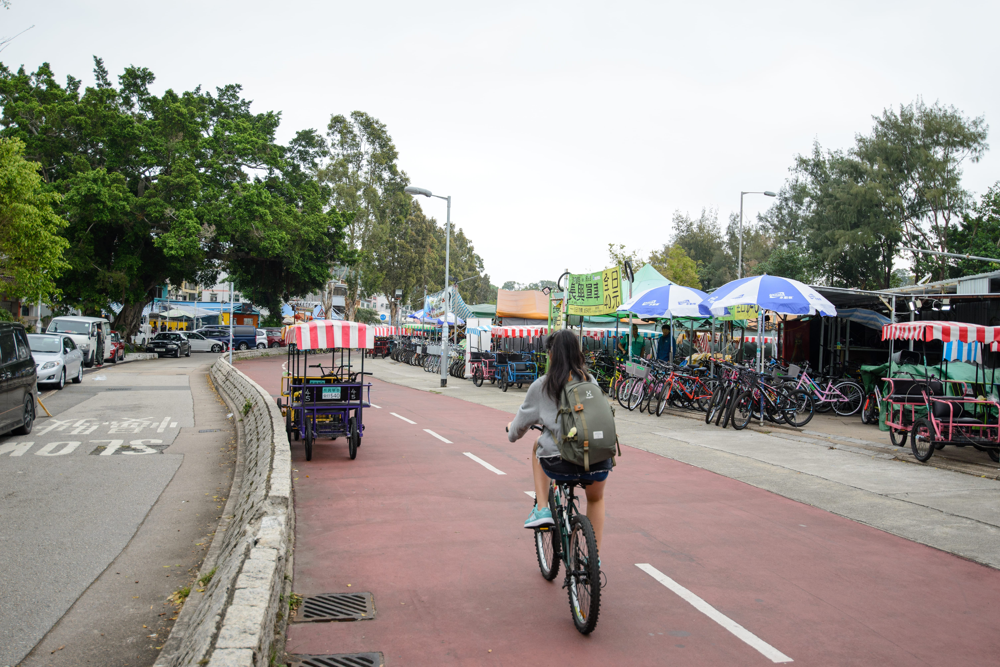

(Secret- The best times to tour TKT and TMT are when the sun is setting in Autumn or during the hot humid summer with a slim chance to encounter the ice cream van)
With widespread online awareness of Hong Kong's cramped living situations, an unmentioned phenomenon that prevails is the lack of ability to ride a bike across many individuals. There is an estimate of ~0.5% of HK's total population that do ride a bike as a regular transportation method.
Due to extreme space allowances at home, a significant number of individuals never obtain experience or receive an opportunity to learn how to ride a bike. Especially when many locals grow up in densely packed high-rise apartment areas, are surrounded with highly efficient low-cost public transport and no spare space at home to store a bike.
This leads to many working class individuals after work will favour a weekend or night time out at Tai Mei Tuk (TMT). Similarly, school kids will come to TMT in their afternoons once class is over or the weekends.
TMT? Wasn't it TKT?? ----->
TKT is close to TMT, about a kilometre or two away. Although, both are categorised as local residential areas, TMT is favoured by locals for accessible and different outdoor activities and restaurants to choose from.
~ A list of activities around TKT & TMT ~
( From a local )